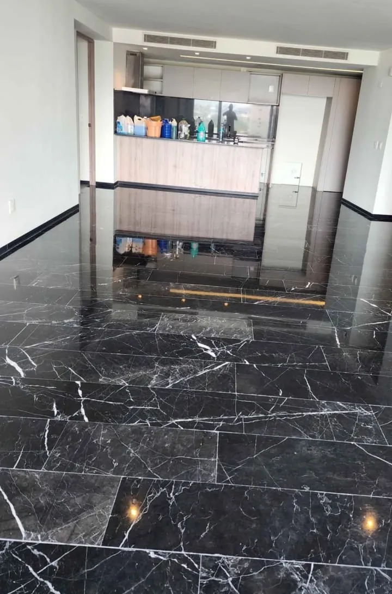

Mármol
Elegancia atemporal. Cada losa tiene un veteado irrepetible que da carácter a pisos, baños, escaleras y cubiertas.
- Brillo profundoAcepta pulido espejo y acabados mate.
- Cuidado sencilloCon sellado y mantenimiento adecuados conserva su belleza por años.
- Veteado únicoNinguna pieza se repite, tu espacio nunca será igual a otro.
PisosBañosEscalerasMuros
Quiero mármol en mi proyecto